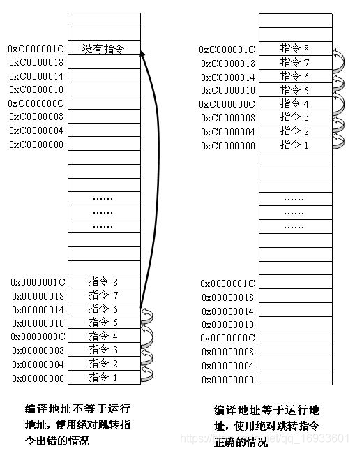

文章目录
1. 为什么要有相对跳转和绝对跳转？
顺序执行：指令一条一条按照顺序往下执行，比如变量的定义和赋值都是按照顺序执行的。
跳转执行：当指令执行到当前位置后跳转到其他位置执行。比如，在主函数中调用其他函数就是典型的跳转执行。其中跳转又分为绝对跳转和相对跳转。
绝对跳转：直接跳转到一个固定的，实实在在的地址。
相对跳转：相对于当前pc值的一个跳转，跳转到pc+offset的地址。
我们清楚了上面几个概念，就知道了为什么要有相对跳转和绝对跳转。各种指令相互配合才能使得cpu有更高的处理效率。正是因为有了顺序和跳转指令，我们的cpu才可以处理各种复杂的计算。
2. 在程序中只有相对跳转/绝对跳转是否可以？
我们以一个例子具体分析。
| 指令编号 | 指令功能 |
| 指令1 | 顺序执行 |
| 指令2 | 顺序执行 |
| 指令3 | 相对跳转到指令5 |
| 指令4 | 顺序执行 |
| 指令5 | 顺序执行 |
| 指令6 | 绝对跳转到指令8 |
| 指令7 | 顺序执行 |
| 指令8 | 顺序执行 |
假设程序被放在0x00000000位置开始执行，编译链接后的结果为：
| 指令地址 | 指令编号 | 指令功能 | 下条指令地址 |
| 0x00000000 | 顺序执行 | 顺序执行 | 当前地址+4 |
| 0x00000004 | 顺序执行 | 顺序执行 | 当前地址+4 |
| 0x00000008 | 跳转到指令5 | 跳转到指令5 | 当前地址+8 |
| 0x0000000C | 顺序执行 | 顺序执行 | 当前地址+4 |
| 0x00000010 | 顺序执行 | 顺序执行 | 当前地址+4 |
| 0x00000014 | 跳转到指令8 | 跳转到指令8 | 0xC000001C |
| 0x00000018 | 顺序执行 | 顺序执行 | 当前地址+4 |
| 0x0000001C | 顺序执行 | 顺序执行 | 当前地址+4 |

当这段程序被放在0xC000000空间时，开始执行指令1，然后采用相对寻址的方法就可以运行到指令6，在指令6执行时也可以使用绝对寻址的方法从0xC0000014正确跳转到指令8所在的0xC00001C位置，这段代码运行正常。
当这段代码被放在0x00000000空间时，开始执行指令1，然后采用相对寻址的方法就可以运行到指令6，但在指令6执行时使用绝对寻址的方法从0x0000014跳转到了0xC000001C，但0xC000001C空间没有代码，这样程序就跑飞了。
因此，当编译地址（加载地址）和运行地址相同时，绝对跳转和相对跳转都可以正确执行。比如，程序在NORFLASH存储时。
但是，当编译地址（加载地址）和运行地址不相同时，相对跳转都就会出现问题。比如，代码存储在NANDFLASH，由于NANDFLASH并不能运行代码，所以需要重定位代码到内部的SRAM。关于NANDFLASH和NORFLASH可以看这篇文章S3C2440从NAND Flash启动和NOR FLASH启动的问题
3. B（BL）执行过程分析
下图为B(BL）指令的格式。
28~31位（cond）是条件码，就是表明这条语句里是否有大于、等于、非零等的条件判断，这4bts共有16种状态，分别为：
我们以Uboot启动过程中的这句跳转代码分析下BL指令具体的执行过程。
#ifndef CONFIG_SKIP_LOWLEVEL_INIT
bl cpu_init_crit
#endif
1
2
3
上述代码对应的反汇编代码如下：
33f000ac: eb000017 bl 33f00110 <cpu_init_crit>
1
33f00110 <cpu_init_crit>:
33f00110: e3a00000 mov r0, #0 ; 0x0
33f00114: ee070f17 mcr 15, 0, r0, cr7, cr7, {0}
1
2
3
当指令执行到33f000ac时，对应的机器码为eb000017（1110_1011 0000 0000 0000 0000 0001 0111），其中[31,28]高四位为条件码，1110表示无条件执行。[25,27]位保留区域,24位表示是否带有返回值，1表示带有返回值，也就是BL指令。[23,0]为指令的操作数，0000 0000 0000 0000 0001 0111。
BL指令的跳转地址是按照如下方式计算：
1、将指令中24位带符号的补码立即数扩展为32位(扩展其符号位)原数变成 0000 0000 0000 0000 0000 0000 0001 0111。
2、将此数左移两位0000 0000 0000 0000 0000 0010 1000 0000 变成 0000 0000 0000 0000 0000 0000 0101 1100 = 0x0000005c
3、将得到的值加到PC寄存器中得到目标地址，由于ARM为3级流水线，此时的 pc = 33f000ac+8 = 33F000B4，pc = 33F000B4 + 0x0000005c = 33F00110与图中的cpu_init_crit的地址相等。
在算的过程中我们使用的始终是PC的值，假设程序在 0 地址处执行，那么计算方法一样，pc 的值变了计算出来的结果也随之改变。所以 BL 的跳转时是与位置无关的。
版权声明：本文为博主原创文章，遵循 CC 4.0 BY-SA 版权协议，转载请附上原文出处链接和本声明。本文链接：https://blog.csdn.net/qq_16933601/article/details/105936166
4. LDR指令执行过程分析
下图为LDR指令的格式。
我们以下图中的第一句话作为例子分析下
ldr pc,=call_board_init_f
1
对应的反汇编代码如下：
33f000d0: e59ff324 ldr pc, [pc, #804] ; 33f003fc <fiq+0x5c>
1
33f003fc: 33f000d4 .word 0x33f000d4
........
33f000d4 <call_board_init_f>:
33f000d4: e3a00000 mov r0, #0 ; 0x0
1
2
3
4
ldr pc, [pc, #804]这条指令为伪指令，编译的时候会将call_board_init_f的链接地址存入一个固定的地址（链接时确定的），对于本条指令这个地址就是33f000d4 。
上面的反汇编出来的 ldr pc,=call_board_init_f就变成了ldr pc, [pc, #804]，由于ARM使用了流水线的原因，所以在执行 ldr pc,[ pc, #4 ]的时候 pc 不在这句代码这里了，而是跑到了 pc+8的地方，这句代码相当于 pc= *(pc+804+8)=33f000d0+32C=33f003fc ，所以会跳转到33f003fc 地址取33f000d4 ，而 33f000d4 是存在代码段中的一个常量，并不是计算出来的，不会随程序的位置而改变，所以无论代码和pc怎么变 *(pc+804) 的值时不会变的。
这样，绝对跳转中的固定地址就很好理解了，要跳转地址的值在链接时就已经确定了，存在了一块内存中。而相对跳转时，反汇编bl 33f00110中的33f00110是根据pc计算出来的，当pc改变时，结果也会改变。所以，称为相对跳转，与当前位置无关。
4. B（BL）和LDR跳转范围是如何规定的？
下图为B(BL）指令的格式
BL指令的[23,0]存放的是要跳转的相对地址，由于指令所在地址必须是4字节对齐的，因此跳转的地址最低位必然是0。
BL指令[23,0]位保存的是省略这最低2位的地址，如果补全了这2位,BL指令就可以表示26位的跳转地址。在这26位中需要使用1位表示向前跳还是向后跳，那么剩下的25bits就可以表示32 MBts的范围了，225=32M因此，B（BL）指令的跳转范围为-32MBytes~+32MBytes。
下图为LDR指令的格式
图中的LDR的跳转范围计算方式和B指令的类似，其中Rn和Address_mode共同构成第二个操作数的内存地址。由Address_mode的9种格式可以知道，Address_mode表示的就是偏移地址的范围大小，为212=4K。（不理解的可以对比下ldr pc, [pc, #804]和Address_mode的九种格式，很明显可以看出Address_mode就是当前地址的偏移范围）